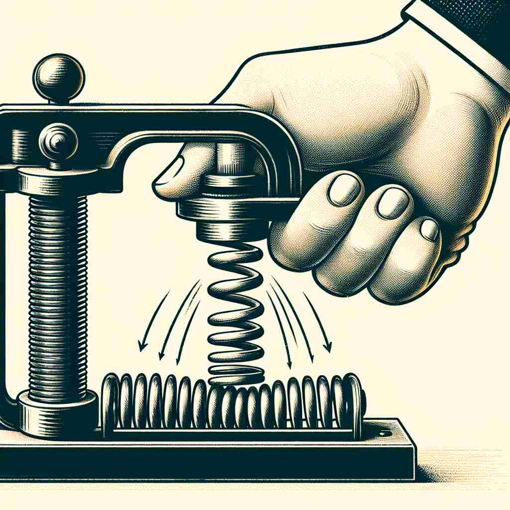

🗝️ n. strength or power used to push or pull something
🖼️ 在一个科学实验室里，学生们正观摩物理老师的演示。老师用手推一个重物，解释着摩擦力和重力的作用。他用力推的姿势完美地展示了'force'代表推动或拉动物体的力量。
🔍 想象'force'是一种看不见的'力量'。这种力量可以推动物体、影响人的行为、组织群体，甚至改变事件的进程。无论是物理上的力，还是抽象的影响力，都源于这个核心概念。记住这个'力量'的形象，可以帮助你联想和理解'force'的各种用法。

💬 The wind is a force of nature that moves the leaves.

💬 The police had to use force to control the crowd during the protest.
💬 The force of the handshake showed their determination to work together.

💬 You need to apply force to compress the spring.
🔗 1. enforce: 执行，实施 2. reinforce: 加强，巩固 3. forcible: 强制的
💡 记住 'force' 可以联想到 'fort'（堡垒），表示坚固和力量，类似于需要力量去推动或实现某些事情。通过力量的概念来联想 'force' 的实际意义。
🗝️ v. to make someone do something they don't want to do
🖼️ 在一个家庭讨论中，小女孩不愿吃蔬菜，父母温和地坚持要求她尝试。他们通过鼓励和建议让女儿最终妥协，这段对话中显露出'force'作为让他人做不愿之事的含义。
💬 They forced him to resign from his position.
❓ 用"力量"推动某人做事
🗝️ n. a group of people organized for a particular purpose, especially military
🖼️ 在一个军事基地的晨会上，指挥官宣布今天的任务。士兵们整齐排列，准备执行分配的工作，这支纪律严明的队伍完美体现了'force'表示专门组织的团队，特别是军队的意思。
💬 The police force arrived at the scene.
❓ 集中的"力量"组织
🗝️ n. the power to influence people's behavior or events
🖼️ 在一个商业会议上，公司CEO发表了激动人心的讲话，激励团队实现新的目标。她的话语深深影响了在场的每一个人，展示了'force'作为影响人类行为或事件的力量。
💬 The force of public opinion can't be ignored.
❓ 影响他人的"力量"
🗝️ v. to push or pull something into a particular position
🖼️ 在家具装配中，小明正努力地将一颗螺丝拧入位。经过几次尝试，他成功地利用力量将螺丝钉固定好，展示了'force'在物体位置上的推拉应用。
💬 He forced the key into the lock.
❓ 用"力"改变物体位置
🗝️ n. a powerful effect on someone or something
🖼️ 在一个感人的音乐会现场，一位歌手用她的歌声打动了观众。音乐带来的强烈情感让听众陷入深思，体现了'force'作为对某人或某物强烈影响之意。
💬 Gravity is a force that affects everything on Earth.
❓ 产生强大"作用力"的事物